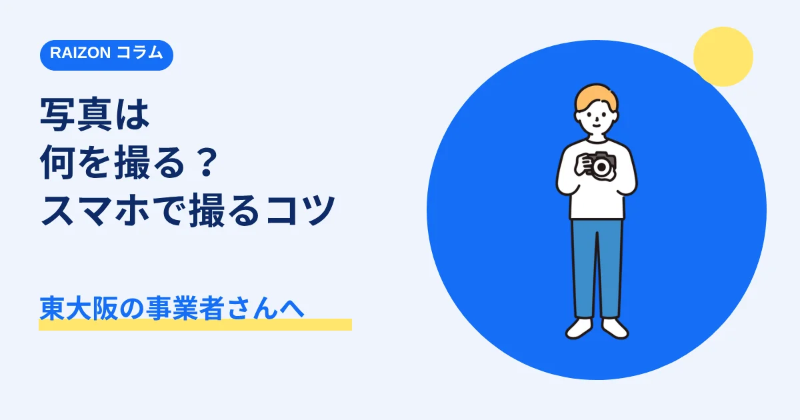
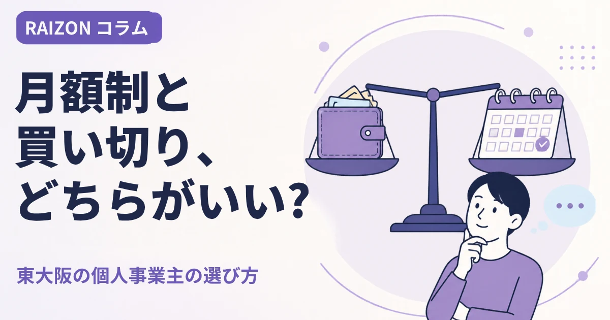

コラム
ホームページのこと、わかりやすく
個人事業主・中小企業の方が、ホームページを持つときに迷いやすいことを、東大阪のホームページ制作会社RAIZONが、やさしく解説します。

制作の基礎ホームページに載せる写真は何を撮る？スマホでできる撮り方のコツ｜東大阪の事業者さんへ
東大阪・大阪・奈良・京都でホームページを作る事業者さん向けに、載せたい写真の種類と、スマートフォンでもきれいに撮るコツを、やさしく解説します。プロのカメラマンがいなくても大丈夫です。
 制作の基礎
制作の基礎こんなホームページ制作会社には要注意！契約前に確認したい7つのサイン
初期費用が高すぎる、5年以上の縛り、リース契約、ドメインが制作会社名義など、東大阪・大阪・奈良・京都の個人事業主さんが、契約前に確認したいホームページ制作会社の7つの注意サインをまとめました。
 集客・運用
集客・運用ホームページの更新は、どのくらいの頻度で必要？更新するべき内容｜東大阪の個人事業主さんへ
ホームページは、作って終わりではありません。東大阪・大阪・奈良・京都の個人事業主・小さなお店向けに、更新の頻度の目安と、更新したい内容をやさしく解説します。
 集客・運用
集客・運用ホームページとGoogleマップ（MEO）の関係｜東大阪・大阪・奈良・京都の事業者さんへ
「東大阪 ○○」「奈良 ○○」「京都 ○○」と検索したときに、地図で見つけてもらうための、Googleビジネスプロフィールとホームページの関係を、やさしく解説します。
 制作の基礎
制作の基礎ホームページを作る前に決めておきたい5つのこと｜東大阪の事業者さんへ
東大阪・大阪・奈良・京都でホームページを作る前に、決めておくとスムーズな5つのこと（目的・お客様・載せる情報・写真・問い合わせの受け方）を解説します。

料金・費用ホームページは月額制と買い切り、どちらがいい？東大阪の個人事業主の選び方
東大阪・大阪・奈良・京都で、ホームページを作る個人事業主さん向けに、月額制と買い切りの違いを、費用・更新・やめるときの3つの視点で比べます。